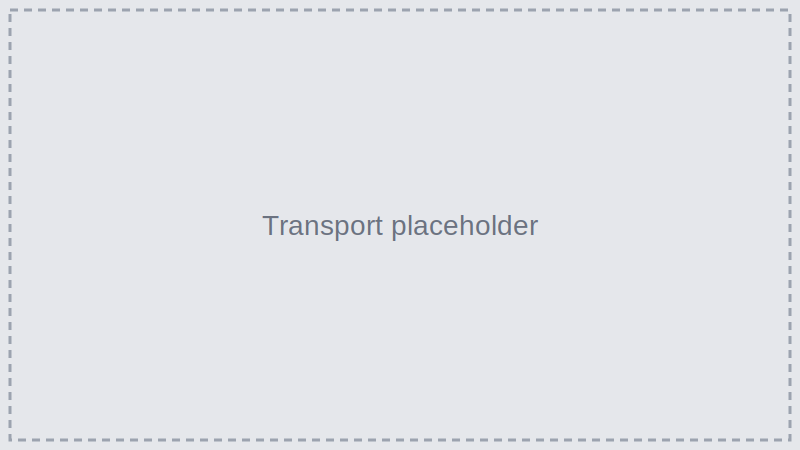

Transportation
Most visitors arrive by air to Taniti’s small airport; a cruise ship docks weekly at Yellow Leaf Bay. The airport is being expanded to welcome larger jets in coming years.
Getting Around the Island
Public Buses
Taniti City buses run 5 a.m. – 11 p.m. daily; private buses serve the rest of the island.
Taxis & Rentals
Taxis are available in the city; rental cars near the airport. Bike rentals with helmets (required by law) are available.